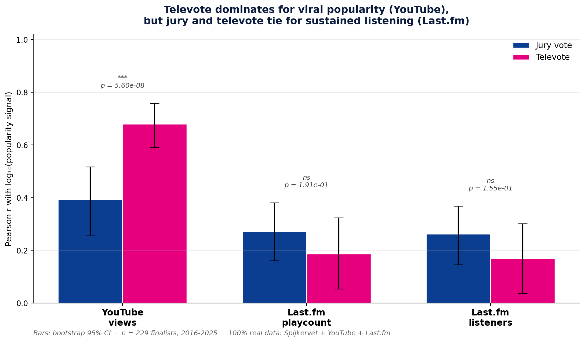
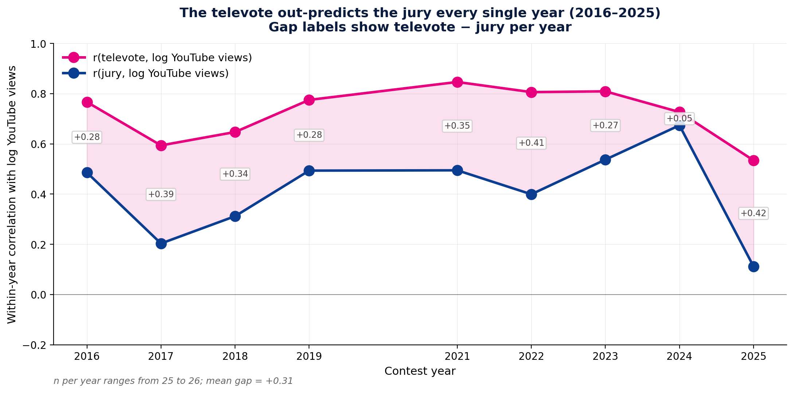
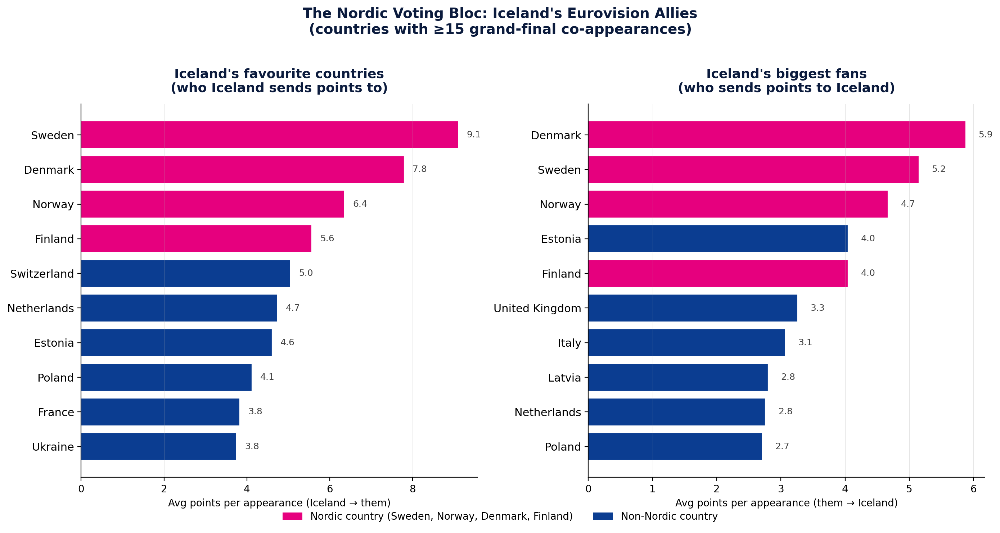
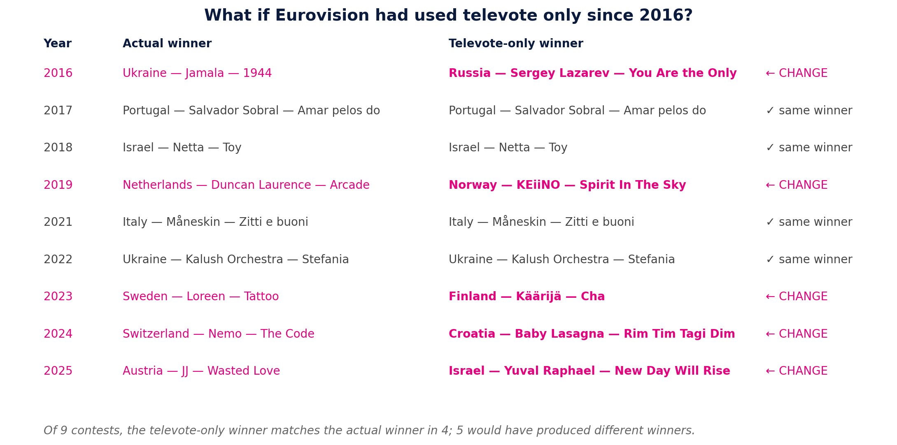

A 70-year look at whether the Eurovision scoreboard knows what a hit is, and what happens when we ask the audience instead of the jury.
Eurovision crowned Run Away the 22nd-best song of 2010. The world played it 45 million times. ABBA's Waterloo won in 1974 with 24 points, out of a theoretical maximum of 160, defining a generation of pop music with the lowest winning total in Eurovision history.
(In 1974 each country had ten jurors. Each juror cast one vote for their favourite song from another country. With sixteen other countries voting on any given song, the ceiling was 160 points; the actual winning range that year was 3 to 24. Compare to 2023, when Loreen's Tattoo won with 583 points out of a theoretical maximum of 900.)
For every famous Eurovision song you can name, there are four jury favourites you've never heard of. What does this gap actually look like at scale? We pulled 70 years of contest results, tagged every song with its YouTube view count and Last.fm listen count, and asked: when the jury and the audience disagree, who tends to be right?
We start with the Spijkervet Eurovision dataset. every entry from 1956 to 2025, 1,713 songs across 67 contests and 52 participating countries. From 2016 onward, Eurovision splits each country's vote into jury points and televote points separately, giving us two parallel scoreboards to compare.
For popularity we layer on two independent signals: YouTube views and Last.fm.
YouTube views are the easy one, total times the official video for each finalist has been played. We pulled them via yt-dlp for 99.9% of the 1,713 entries.
Last.fm is a music-tracking service that's been running since 2002. When a Last.fm user plays a song through Spotify, iTunes, YouTube, or any other player connected to their account, Last.fm automatically logs the listen, a behaviour the service calls "scrobbling". Across tens of millions of registered users, that produces a global tally of how often any specific song has been played.
Last.fm exposes two related-but-distinct numbers per song, and we use both:
The two metrics tell slightly different stories. High playcount, lower listeners = a smaller community of devoted fans who play the song on repeat. High listeners, more modest per-person playcount = broad appeal across many listeners without the obsessive replays. Eurovision songs span both extremes.
Together, YouTube and Last.fm capture two different flavours of "popularity": YouTube captures viral attention. songs that catch fire on social media and rack up views. Last.fm captures sustained listening. songs people queue up on their playlists and play for years.
Plot points (x) against popularity (y), draw a line through the median of each, and four neighbourhoods appear:
Since 2016, Eurovision splits the points: every country awards a full set of jury points and a full set of televote points. That gives us two parallel verdicts on the same song. Toggle below to swap the x-axis between jury points and televote points. Filter by country to see your own.
We tested the jury–televote disagreement against three completely independent measures of "real-world popularity": YouTube views, Last.fm playcounts, and Last.fm unique listeners. The results split:

For YouTube views, the televote correlates much more strongly than the jury vote. r = +0.68 vs +0.39, and Steiger's Z rejects equality at p < 10⁻⁷.
But for Last.fm playcounts and listeners, the gap collapses. Jury and televote each correlate at roughly r = +0.20, with no statistically significant difference (p > 0.15).
Why? YouTube views capture virality. songs that catch fire on social media. The televote, voted live during the broadcast, captures exactly that "did this song grab you" instinct. Last.fm captures sustained listening. songs you put on playlists and play for years. Juries reward exactly that kind of craft.
To make sure the correlation finding wasn't an artefact of newer videos accumulating views faster, or of voting blocs systematically over-rewarding their neighbours, we fit a series of ordinary least-squares linear regressions on all n = 232 grand finalists: log(YouTube views) regressed on standardized jury points, televote points, and year, first without country effects, then with one-hot country fixed effects to absorb voting-bloc variance.
Two findings. First, adding country fixed effects increases R² from 0.53 to 0.65. voting blocs really do explain about 12% of additional variance in popularity. Second, the televote coefficient gets larger when we add country effects, not smaller (β = +0.31 → +0.34). The jury coefficient stays near zero (+0.04 → +0.03). Once we control for which country a song came from, the televote effect is now 10 times larger than the jury effect, up from 7.3× without country controls.
In plain English: even after we account for the Nordic bloc, the Eastern European bloc, and every other country-level voting pattern, the televote still predicts YouTube popularity an order of magnitude better than the jury vote. The finding is robust.
Because the regression predicts each song's expected YouTube views from its votes, year, and country, we can flip the model around and ask: which songs vastly exceeded the model's prediction? Those are the empirical Sleeper Hits, songs Eurovision and the bloc-voting math both undersold.
Some of the names overlap with the hand-built Cinderella scoreboard from earlier (Efendi's Mata Hari 2021, Hurricane's Loco 2021), but the residual plot derives them from the model rather than from a hand-defined score, which is the more rigorous version of the same insight. Robin Bengtsson's 2017 I Can't Go On finished 5th but the model expected 30× more YouTube views than it actually got. The audience moved on; the jury didn't.
Is this just one bad year for the jury? No, we computed the jury–popularity and televote–popularity correlation within each contest year separately, on each year's ~26 finalists. The televote outperforms the jury every single year from 2016 to 2025, with the gap ranging from +0.05 (2024) to +0.42 (2025).

We're both Icelandic. Iceland first competed at Eurovision in 1986 and has sent an entry in 36 of the 39 contests since (skipping 1990, 1998, and 2002 for budgetary reasons; 2020 was cancelled for everyone). In all those entries, Iceland has never won. We've come second twice (Selma Björnsdóttir's All Out of Luck in 1999, and Yohanna's Is It True? in 2009), but the trophy has always slipped away. We wanted to see if our gut feeling, that the jury keeps underrating us, actually held up in the data.
The pattern shows up across every era. Hatari's Hatrið mun sigra (2019, 10th place) placed mid-pack but its 6.2 million YouTube views are closer to that year's third-place finisher (Sergey Lazarev, 7.9M) than to any other 10th-placer in our dataset. Daði og Gagnamagnið's 10 Years (2021, 4th place) gave us our best finish in twelve years but lives quietly on Last.fm, about 1,200 plays total, while the 2021 winner Måneskin sits at over 8 million. The contest's juries rewarded our craft, but the world didn't queue up for repeat listens. And the freshest example: VÆB's Róa (2025, 25th of 26). placed near last by Eurovision, yet ranks #1 on our entire "robbed" list (next scene).
One thing every Eurovision viewer notices: countries vote for their neighbours. Sweden hands twelve points to Norway; Greece hands twelve points to Cyprus. We wanted to test whether this folk-wisdom voting bloc is real, and where Iceland sits in it.
We computed, for every country pair across all 38,000+ grand-final votes from 1957–2025, the average points per appearance Iceland sends to other countries (left), and the average other countries send to Iceland (right). To avoid small-sample noise, we filtered to country pairs with at least 15 co-appearances in finals. enough overlap that any patterns are statistically meaningful, not the result of one or two outlier songs.

The bar chart shows the ranking; the map below shows the geography. Each country is shaded by the average points Iceland's combined vote sends them per appearance, darker pink = more points. Hover any country to see the points in both directions.
Three things jump out:
None of this affects our central jury-vs-televote finding, the bloc effect is too small to swing the n=229 correlation. But it does explain a piece of the unexplained variance. Some of what looks like Iceland's televote tracking "popularity" is partly the bloc giving and receiving its usual neighbourly twelve points.
(One thing we deliberately excluded: Australia. Iceland and Australia have only co-appeared seven times, but the average points-per-appearance is the highest of any country (10.1). The high number is real, but it rests on a small sample where two of the seven values are zero, including 2018 and 2022, when Australia sent songs Iceland didn't reward at all. Those are the kinds of patterns that disappear with one more contest. We filter them out so the chart shows the robust signal, not the noisy one.)
Combining z-scored popularity (YouTube + Last.fm) and z-scored placement, we built a Cinderella Score: how much more, or less, popular a song became than its Eurovision finish predicted. The two extremes tell two very different stories.
Placed badly. The world played them anyway.
| Place | Song | Score |
|---|
Eurovision podiums. Forgotten by streaming.
| Place | Song | Score |
|---|
The list at left is, in a sense, Eurovision's collective "we got that one wrong". songs the contest ranked low but the world played millions of times. The list at right is its mirror: respectable Eurovision finishes that left no cultural footprint.
The 50/50 jury-televote split is a policy choice, not a law of nature. Some critics argue Eurovision should drop the jury entirely and let the audience decide. We can test exactly what would have happened, re-rank each year's finalists by televote points only, and see who would have actually won.

Of the nine contests since the jury–televote split was published separately, five would have produced different winners under televote-only:
Some songs would have climbed double-digit places under televote-only, exactly the Sleeper Hits the audience saw and the jury didn't:
Our own country sees a clear improvement. Hatari's Hatrið mun sigra (2019) climbs from 10th to 6th. Systur (2022) climbs from 23rd to 18th. VÆB's Róa (2025) jumps from 25th of 26 all the way to 17th. an 8-place leap. Daði (2021), interestingly, drops from 4th to 5th, within our 2016+ data subset, Daði is the clearest Icelandic case of the contest's juries rewarding craft over catchiness, scoring a top-5 finish but accumulating only ~1,200 Last.fm plays.
The takeaway isn't that Eurovision should switch to televote-only. The takeaway is that the system Eurovision does have. 50/50, with both judgements visible, is doing meaningful work. Removing the jury would change the winner one year in two, and not always for the better.
The 50/50 jury/televote split isn't a flaw. It's Eurovision hedging between two complementary judgments. The jury rewards craft that ages well, the song that holds up on the fiftieth listen. The audience rewards craft that catches fire, the song that grabs you in three minutes of TV.
When the two scoreboards agree (Loreen's Tattoo, Måneskin's Zitti e Buoni), you get a juggernaut that wins on the night and lives on streaming. When they disagree, both sides are right, just about different things. The audience is correct that Run Away deserved more than 22nd place. The jury is correct that the songs they put on the podium will still be played in 30 years.
Eurovision works because it asks both questions. The next time your country sends a song the jury seems to ignore. watch the YouTube views. The audience will tell you whether you were robbed.
The full methodology, statistical tests, dataset description, and reflections live in the explainer notebook. This site is the story; that's the receipts.